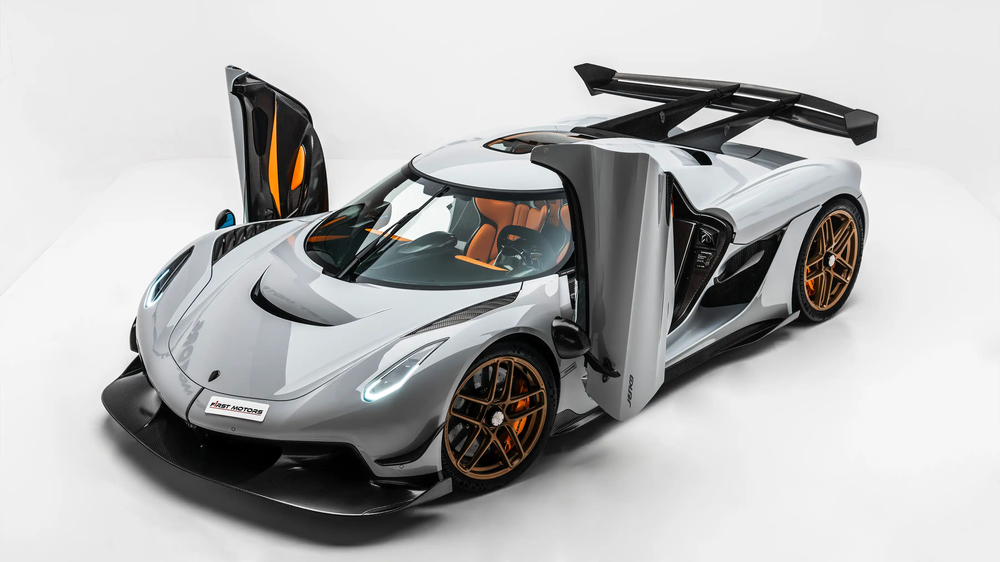

About our best car car The Koinigseeg Jesko
The Koenigsegg Jesko is a Swedish hypercar introduced in 2019 as the successor to the Agera series, named after Jesko von Koenigsegg, the father of company founder Christian von Koenigsegg. Built around a carbon-fiber monocoque chassis, the Jesko is powered by a 5.0-liter twin-turbo V8 engine producing up to 1,600 hp on E85 fuel and paired with a revolutionary 9-speed Light Speed Transmission that delivers lightning-fast gear shifts. Designed for both track and speed performance, it comes in two versions — the Jesko Attack, optimized for downforce and handling, and the Jesko Absolut, engineered for top speed with a more aerodynamic body. Advanced features like active rear-wheel steering, Triplex suspension , and active aerodynamics make it one of the most technologically sophisticated cars ever built. With production limited to 125 units, the Jesko combines extreme power, cutting-edge engineering, and exclusivity — pushing the boundaries of whats possible in automotive performance.